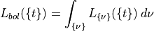

Plotting and Data Visualization¶
Generating Synthetic Light Curves¶
Sedona default outputs a file called spectrum.h5 that gives the time series of the light curve  at frequencies and output times
at frequencies and output times  .
.
The bolometric luminosity is simply given as

Similarly, the absolute bolometric magnitude is given as

In order to get light curves in certain filters, you have to convolve it with a given transmission curve.
If is the transmission for a given filter band at frequency, then the luminosity convolved with the filter is expressed as

The formula to convert this to an AB magnitude is
where pc is the standardized distance to convert to a flux.
Note that is here expressed as an energy-counting response.
A script that generates synthetic light curves from the Sedona spectrum.h5 file is provided in the directory tools/lightcurve_tools. The python program lcfilt.py takes as input a spectrum.h5 file and a list of filters/bands and converts the raw spectrum output to light curves.
To run, simply call:
python lcfilt.py -s <spectrum.h5> -b <band1,band2,...>
where spectrum.h5 points to the Sedona spectrum file, and <band1,band2,…> is a comma-separated list of filters that you wish to make light curves in. For example, if I wanted to generate synthetic light curves of a file */path/to/supernova_spectra.h5 in the LSST bands, then one would call:
python lcfilt.py -s /path/to/supernova_spectra.h5 -b LSST_u,LSST_g,LSST_r,LSST_i,LSST_z,LSST_y
The light curve table is outputted in the file lightcurve.out and gives the time, bolometric luminosity, bolometric magnitude, and absolute magnitudes in the specified bands, using the AB magnitude system.
A full list of filters can be accessed by calling:
python lcfilt.py --bands
or by examining the file FILTER_LIST, which also contains references for the filters.
To add a filter not provided, add an entry to the end of FILTER_LIST and append the transmission curve (in Angstroms and relative response) to the end of allfilters.dat.